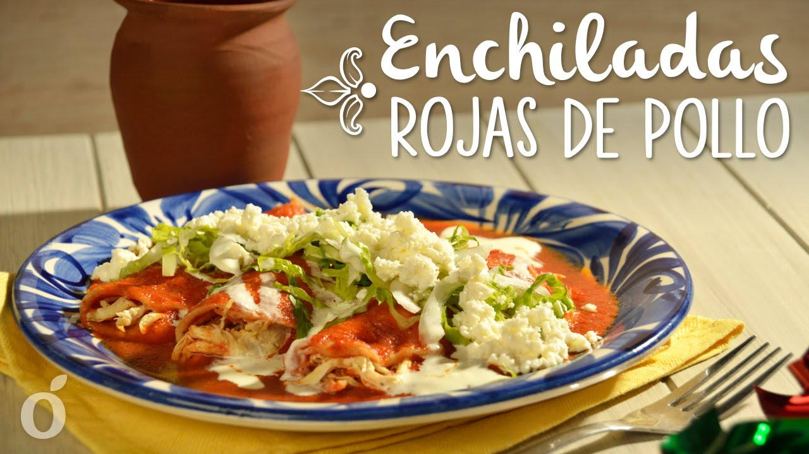
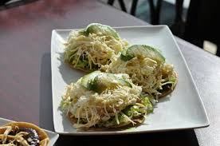

GASTRONOMIA
CECINA:
Un platillo por el que después de probarlo querrás volver Atlixco, la tradicional cecina de Atlixco, elaborado por cecineros del municipio de manera artesanal este platillo es básico dentro de la cocina atlixquense, acompañado de sus guarniciones de queso, aguacate y nopales.
CECINA
Taco Placero:
Mejores no encontraras en Atlixco rellenos de cualquier guisado simple, combinado o no con una dosis de arroz a la mexicana; los hay de chicharrón prensado, tinga, huevos duros, nopales con huevo, longaniza con papas, chicharrón guisado en salsa verde o roja, bistec con nopales, costilla de puerco en adobo, entre otros.
TACO PLACERO
Enchiladas:
Los rollitos que se forman uno tras otro para cubrirse de una delicada salsa. Rellenas de pollo, bañadas en salsa verde, roja o mole que se acompañan de lechuga, aguacate, crema, queso, rábano y cebolla, listos para degustarse calientitos y bien bañaditos.
ENCHILADAS

Barbacoa.
El estilo de carne con un sabor inigualable que te hará chupar los dedos.
La carne de borrego hecha en barbacoa es uno de los estilos de popularidad en el centro del país. Elaborada dentro de la tierra con hojas de maguey alcanza su mejor punto en sabor; lo puedes preparar en taco o simplemente con una rica salsa y aguacate. No olvides el consomé que se produce al cocinar la barbacoa.
BARBACOA
PIPIANES, MOLES Y ADOBOS.
Mole Poblano.
El platillo por excelencia en fiestas coloniales que muestra la creatividad de las familias poblanas, delicioso mole dulce representativo de Puebla, está hecho a base de varios chiles y condimentos, agregando una caricia de chocolate. Su consistencia espesa se acompaña comúnmente de una pieza de guajolote o pollo y se agrada a la vista decorándolo con ajonjolí tostado.
MOLE POBLANO
Mole de Olla.
Suculento caldo hecho a base de carne de res, sazonado en salsa de jitomate con chile costeño y perfumado con ramas de cilantro. Este platillo se acompaña de ejotes y calabacitas para servirse caliente en un plato al que se le agrega como toque final el jugo de limón al gusto.
MOLE DE OLLA
Mole de Panza.
Este caldoso plato hecho con panza se puede encontrar en negocios de antojitos mexicanos o fondas de nuestra bella ciudad.
MOLE DE PANZA
Mole Verde o Pipián Verde
Se elabora con hierbas y hojas verdes, se hace con pepitas y otras semillas molidas, chile poblano o cuaresmeño. En esta receta se utiliza tanto la pepita (semilla de calabaza) como las hojas verdes y el resultado es un guiso que sorprende por su complejidad, aunque hay otra variedad de Mole Verde el caldoso hecho con salsa verde, acompañado de calabacitas, ejotes, habas verdes y carne de res, pollo o puerco.
PIPIAN VERDE
El Pipián Rojo
Se elabora se hace con pepitas y otras semillas molidas, como ajonjolí, semillas de calabaza, jitomates y chiles secos rojos, logrando un sabor exquisito al paladar.
PIPIAN ROJO

Adobo.
Elaborado con especias, chiles anchos, guajillo, ajos, hoja de aguacate este platillo deleita a los más exigentes paladares y es considerado dentro de la gastronomía mexicana uno de los platillos que no puede faltar para probar.
ADOBO
Chiles en nogada
Platillo de temporada que envuelve parte de la historia y triunfo de nuestro México.
Representativo del estado de Puebla, tiene su origen en los tiempos de Independencia en homenaje a Agustín de Iturbide. Los colores de la bandera se aprecian con armonía y perfección en este manjar por los meses de julio y agosto, ya que sus ingredientes que utilizan para el relleno se producen solo en esta temporada.
CHILE EN NOGADA
ANTOJITOS.
En ningún lugar pueden faltar estos deliciosos antojitos.
Cemitas.
Un crujiente y dorado pan redondo con ajonjolí en decoración es la cubierta de ingredientes comunes como el quesillo, pápalo, chipotle, cebolla, aguacate, aceite de olivo y según el gusto milanesa, “carnitas”, pata, jamón o carne enchilada que en conjunto dan origen al suculento plato de la región similar a la torta.
CEMITAS
Pambazos.
Te gusta el pan, pues este es un pan completamente liso parecido a la telera (bollo) rellena de chorizo o longaniza y posteriormente bañada en salsa de chile guajillo o ancho, listo para satisfacer tu paladar.
PAMBAZOS

Molotes.
Son una derivación de las gorditas, quesadillas o empanadas cerradas. Los molotes son hechos a mano con masa de maíz que según el gusto se puede rellenar con papa, sesos, queso, requesón o tinga, para después freírse y disfrutar de su crujiente sabor y en Atlixco son toda una tradición.
MOLOTES
Tostadas.
Este es un antojito que se aprecia por su fácil preparación y gran satisfacción en su sabor, siendo una sencilla tortilla frita se perfecciona añadiendo frijoles, lechuga, queso, crema, salsa y complementando su mismo nombre, un ingrediente electo por su degustador, el cual puede ser pollo, lengua, pata o quesillo.
TOSTADAS

Tamales.
De Comino tradicional de la región de Atlixco, elaborado con maíz, jitomate y guajillo para la salsa, manteca y cominos el cual le da ese sabor muy especial.
De canario, Estos tamales se preparan con harina de arroz, mantequilla, azúcar y yemas de huevo. Es una receta diferente a la de los tamales tradicionales.
TAMALES


 1
1 2
2 3
3 7
7


 1
1 2
2 3
3 5
5 8
8